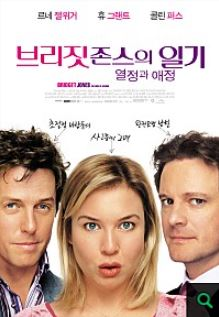
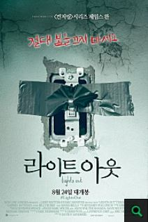

| 1 |
브리짓 존스의 일기2 |
 |
드디어 애인이 생긴 '브리짓 존스(르네 젤위거)'가 이제 연애를 시작한다.
그녀의 남자친구는 바로 꿈 속에서나 나의 애인이 되어 줄 것 같은 완벽한 남자 '마크(콜린 퍼스)'.
그의 품에 안겨 달콤한 사랑에 푹 빠져있는 브리짓은 여전히 술과 담배를 사랑하고, 날씬함과는 거리가 먼 아줌마 몸매로 끝나지 않는 살과의 전쟁을 계속한다.
|
클릭
|
| 2 |
걸캅스 |
|
민원실 퇴출 0순위 전직 전설의 형사 '미영'과 민원실로 밀려난 현직 꼴통 형사 '지혜
' 집에서는 눈만 마주쳐도 으르렁 대는 시누이 올케 사이인 두 사람은
민원실에 신고접수를 하기 위해 왔다가 차도에 뛰어든 한 여성을 목격하고
그녀가 48시간 후 업로드가 예고된 디지털 성범죄 사건의 피해자란 사실을 알게 된다.
강력반, 사이버 범죄 수사대, 여성청소년계까지 경찰 내 모든 부서들에서
복잡한 절차와 인력 부족을 이유로 사건이 밀려나자
‘미영’과 ‘지혜’는 비공식 수사에 나서기로 결심한다. |
클릭
|
| 3 |
라이트아웃 |
 |
불이 꺼지면 나타나는 누군가를 목격한 남매 레베카와 마틴.
알고보니 어둠 속 그 여자는 빛이 닿으면 피부가 타들어가는 기이한 병을 앓고 있던 엄마의 어릴적 친구 '다이애나'였고,
현재도 엄마 곁에서 함께 살고 있다는 걸 알게 되는데… |
클릭
|